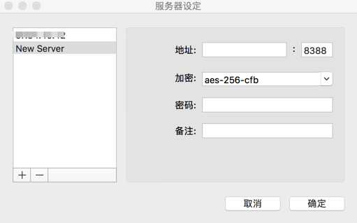

不知道是北京开大会还是啥原因..反正买的vpn不能用了，自己试着搭一个ss服务用
一. 几家提供VPS的服务商
搬瓦工（Bandwagonhost）：我目前用的是搬瓦工的主机，之前优惠力度很大，而且最低只要$2.99，但是目前这种已经
Out of Stock了 :(，而且可能是用户太多了，线路有时候并不是太稳定，一分钱一分货吧，可能$19.99的主机就会比较稳定了，哈哈哈。这里是一个%6的优惠码BWH1XZOBK，另外就是搬瓦工支持支付宝支付。Vultr：价格比搬瓦工略贵一些，嗯贵了0.01刀，而且现在vultr也支持支付宝了，后面搬瓦工到期之后倒是可以尝试一下
其他可以考虑的包括国内公有云厂家提供的境外主机，比如香港区域或者北美的等等。
二. shadowsocks
shadowsocks是由Clowwindy开源的，和SSH隧道方式翻墙不同的是，它将原来的直接SSH隧道打通GFW到外网server的方式改成了在我们本地增加一个ss客户端，由ss客户端进行加密和server通信，这样经过GFW时就说一个普通的tcp包而不会被GFW所干扰，那么剩下的会影响你网速的因素就只剩下你本身的网络状况和你选用的云服务器服务商的超售情况了:)
三. 搭建服务
以搬瓦工为例，在购买好服务器后以此进入：Client Area->Services->My Service->KiwiVM Control Panel，进入云主机的管控页面
购买的云主机默认安装的centos6，我这里重新安装了debian来安装锐速，安装os前记得将主机停机，另外云主机的ssh服务使用的不是22端口，所以登录主机的使用记得使用面板里提供的ip和port，主机的root密码会发送到你的注册邮箱内：
1. 安装shadowsocks
|
安装时配置如下：
安装结束后会显示你后面需要用的服务器配置信息：
2. 安装锐速
|
锐速的安装是傻瓜式操作，安装完成之后重启云主机即可，接下来配置shadowsocks-client
3. shadowsocks客户端
从网络上下载一个ss客户端安装，之后在服务器设定内添加我们刚才配置的服务器信息，如下图中，分别填入第1步骤结束后显示的服务器信息，IP，端口，加密方式和密码：

所有这些操作之后就可以访问如google.com这样的网站了，另外ss客户端中可以手动选择是自动代理还是全局代理模式。全局代理就是所有访问都经过我们配置的ss，如果不想这样就选择自动代理模式。在自动代理模式下，你可以修改自己的PAC文件，位于ss客户端的编辑自动模式下的PAC，这个文件内容其实和我们直接修改hosts文件类似，把你希望通过代理访问的地址添加到这个文件列表内，在自动模式下访问此地址将通过代理来访问。